Pond: CXL-Based Memory Pooling Systems for Cloud Platforms
This page was written by an AI model to give a high-level overview of the paper. Please check the paper for detail: ACM Digital Library.
Public clouds run opaque VMs (providers cannot inspect what is inside them) and must still give them near-bare-metal performance at competitive cost. DRAM dominates that cost calculus: the paper reports it is around 50% of server cost at Azure and 40% of rack cost at Meta, and its cost-per-bit has largely stopped falling. Hypervisors make performance predictable by statically preallocating and pinning a VM's entire address space to the NUMA node that holds its cores, which is also what virtualization accelerators such as SR-IOV and direct device assignment (DDA) require. That rigidity produces memory stranding: once a server's cores are all rented, any leftover DRAM capacity cannot be rented out either, because a new VM would need cores too. Across 100 Azure clusters over 75 days, stranding grows with core occupancy and reaches 25% of DRAM at the 95th percentile, with individual outliers near 30-36%.
Existing fixes do not fit this setting. Process-level memory compression (zswap-style) and prior hypervisor/OS disaggregation systems reclaim memory by faulting on access, which costs microseconds per fault and breaks the static pinning that virtualization accelerators need. Hardware-only rack-scale disaggregation designs are not built from commodity parts and are not easily deployable. Pond's premise is that only CXL's load/store memory semantics (CXL.mem) let memory live in a shared pool while staying mapped through ordinary page tables, so accelerator compatibility and fault-free access are preserved by construction; the remaining problem is managing the latency gap between pooled and NUMA-local memory.
Pond's design rests on two measurements from Azure production traces. First, pools spanning only 8-16 CPU sockets already capture most of pooling's DRAM savings, and that pool size keeps CXL's added latency to roughly 70-90ns over NUMA-local DRAM (rack-scale pooling adds well over 180ns). Second, about half of all VMs leave 50% or more of their rented memory untouched, and an ML model trained on metadata and lightweight telemetry can predict, per VM, both whether it is insensitive to the extra pool latency and how much memory it will not touch , both quantities that can be placed on the pool at effectively no performance cost.
Mechanically, a new external memory controller (EMC) ASIC exposes DDR5 channels through several CXL ports to 8-16 hosts, with a Pool Manager assigning 1GB memory slices to at most one host at a time. At VM placement, Pond's scheduler consults its prediction models: latency-insensitive VMs go entirely on pool memory; others get local DRAM sized to their predicted untouched memory, with the remainder exposed as a cores-less "zNUMA" node the guest OS will spill into only if it actually needs more memory than predicted. A QoS monitor watches hardware counters continuously and, on a misprediction, live-migrates the VM back to all-local DRAM.
Across 158 representative cloud and benchmark workloads, and simulations over traces from 100 production clusters, a 16-socket Pond pool reduces aggregate cluster DRAM requirements by 9% and 7% under emulated 182% and 222% CXL latency increases respectively (versus 3% for a static fixed-allocation baseline), while keeping 98% of VMs within a 5% performance-degradation margin of all-local-DRAM performance , a reduction the paper estimates at roughly 3.5% of overall cloud server cost.
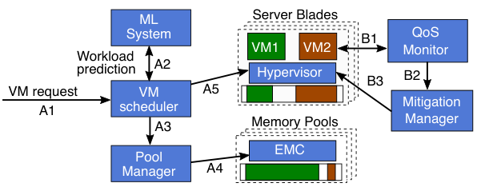
Key takeaways
- Memory stranding (cores fully rented, DRAM left idle) wastes up to 25-30% of DRAM at Azure's 95th percentile, and is the paper's central motivation for pooling.
- CXL.mem gives cacheable load/store access to pooled memory, so pages stay in ordinary page tables and SR-IOV/DDA virtualization acceleration keeps working , no page faults, no guest-OS changes.
- Small pools of 8-16 sockets capture most of pooling's DRAM savings while adding only ~70-90ns over NUMA-local latency; larger rack-scale pools need switches/retimers and add far more.
- Two ML models, trained only on telemetry already available for opaque VMs (core-PMU counters, hypervisor access-bit scans, VM metadata), predict whether a VM tolerates pool-only latency and how much memory it will not touch.
- A cores-less zNUMA node exposes predicted-untouched memory on the pool, and a QoS monitor live-migrates mispredicted VMs back to local DRAM , so savings never come with a performance cliff.
From stranded DRAM to a CXL-pooled, ML-managed VM allocation
Why stranding happens, why CXL load/store changes what's possible, how Pond sizes and builds its pool, and how prediction plus monitoring keep performance safe. Results are covered in the Evaluation tab.
1 · Background: static preallocation and virtualization acceleration
Cloud VMs are rented with a fixed vCPU and memory footprint. To get near-bare-metal performance, hypervisors enable virtualization accelerators (SR-IOV for networking, direct device assignment for other I/O) by default on platforms like AWS and Azure. These accelerators require a VM's entire address space to be statically preallocated ("pinned") up front; the hypervisor cannot later move that memory without temporarily disabling the accelerator. Hypervisors additionally try to keep a VM's memory and cores on the same NUMA node, since cross-node DRAM already costs tens of extra nanoseconds. This combination , pinning plus NUMA-locality , is what makes stranded memory hard to reclaim with ordinary techniques.
2 · Memory stranding: the problem pooling targets
Stranding occurs when all of a server's cores are rented but memory capacity remains unrented because no cores are left to pair it with. Measuring 100 Azure clusters over 75 days, the paper finds median stranding of about 6% of DRAM when 75% of a cluster's cores are scheduled, rising past 10% at 85% core occupancy; at the 95th percentile stranding reaches 25%, with individual outliers near 30%, and across different cluster VM mixes the 95th-percentile figure ranges 3-27% with outliers up to 36%. Simulating pooling against the same traces shows diminishing returns with pool size: allocating a fixed 50% of VM memory from a pool, a 32-socket pool saves 12% of overall DRAM while a 64-socket pool saves only 13% , most of the benefit arrives by 16-32 sockets. However, a fixed 50% pool allocation also causes significant performance loss relative to NUMA-local DRAM, which is exactly the problem Sections 3-9 below address.
3 · CXL as the access mechanism
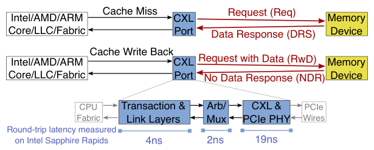
CXL multiplexes load/store memory semantics (CXL.mem) and I/O-style device semantics (CXL.io) over PCIe's electrical layer with a custom low-latency link/transaction layer. A CPU's host-managed device memory (HDM) decoder maps part of the system address space to a CXL device; a last-level-cache miss or write-back to that range becomes a request/response pair on the CXL port rather than a page fault or DMA. Intel measures the CXL port's own round-trip latency at 25ns; combined with controller-side overheads, a basic CXL topology adds about 70ns to a read versus NUMA-local DRAM. CXL 1.1 covers direct attachment, CXL 2.0 adds switch-based pooling, and CXL 3.0 standardizes switch-less pooling and higher bandwidth , the version Pond's multi-headed EMC design targets.
4 · Choosing pool size: the EMC hardware
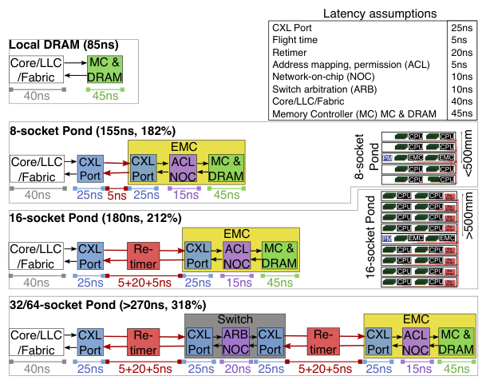
Pond's external memory controller (EMC) is a multi-headed device: it offers several ×8 CXL ports (one per host) and several DDR5 channels, and exposes its full capacity on every port via an HDM decoder, with hosts treating the range as hot-pluggable but initially offline. An EMC sized for 16 hosts needs about the same PCIe lanes and DDR5 channels as AMD Genoa's IO-die; 8-host EMCs need about half that. Pool sizes above 16 sockets require adding CXL switches and, over 500mm board traces, retimers, both of which add latency.
| Configuration | Topology | Measured/projected access latency | Overhead vs local DRAM |
|---|---|---|---|
| Local DRAM | same-NUMA-node | 85ns | , |
| 8-socket Pond | EMC only | 155ns | +70ns (182%) |
| 16-socket Pond | EMC only | 180ns | +95ns (212%) |
| 32/64-socket Pond | EMC + switch(es) + retimers | >270ns | +185ns+ (318%) |
Pond's multi-headed EMC design (versus a switch-only pooling design) reduces access latency by about a third at the same pool size. Combined with the diminishing DRAM-savings returns above 16 sockets (§2), this is why Pond targets small 8/16-socket pools rather than rack-scale pooling.
5 · Workload sensitivity to the added latency
Even 70-95ns of extra latency is not free for every workload. Running 158 representative workloads (in-memory databases/KV-stores, graph and data processing, HPC, SPEC/PARSEC benchmarks, and Azure production workloads) under emulated 182% and 222% memory-latency increases relative to NUMA-local DRAM, the paper finds that under 182% latency, 26% of workloads see under 1% slowdown and a further 17% see under 5%, but 21% see slowdowns above 25%; under 222% latency the insensitive fraction shrinks slightly (23% under 1%, a further 14% under 5%) while the badly-affected fraction grows to over 37%. Variability within a workload class (e.g., different graph datasets in the same GAPBS kernel) is typically larger than variability across classes. Azure's own production workloads are comparatively less affected, since they already place data with NUMA-awareness. This spread of sensitivity is why Pond needs a model that can separate insensitive VMs from sensitive ones, rather than treating all VMs the same.
6 · Pool ownership: slices, add/release, and fragmentation control
The EMC assigns memory in 1GB slices, each owned by at most one host at a time; a 1024-slice (1TB), 64-host pool needs only 768B of permission state, checked on every access so a host cannot read a slice it does not own. A colocated Pool Manager (PM) drives ownership changes over a low-power management bus:
- Add_capacity(host, slice) interrupts the host driver, which hot-plugs the address range into the guest/host OS memory manager; the EMC records the host id in its permission table.
- Release_capacity(host, slice) offlines the slice on the host and clears the EMC's permission entry.
- Because a slice must be fully free before it can be offlined, Pond restricts host-agent and driver allocations to a special hypervisor-only memory partition, preventing stray allocations from fragmenting pool memory.
- Empirically, offlining a slice takes 10-100ms per GB, while onlining is near-instantaneous (microseconds per GB) , the asymmetry behind Pond's asynchronous release strategy, where a departing VM's memory is released in the background while a buffer of already-free pool memory covers new VM starts.
7 · Exposing pool memory to the guest: zNUMA
A VM that uses both local and pool memory sees the pool as a zNUMA node: a SLIT/SRAT memory block (node_memblk) with no entry in node_cpuid, i.e., a NUMA node with memory but no cores, following Linux's existing CPU-less NUMA concept. The correct cross-node latency is included in the guest's NUMA distance matrix. Guest-OS NUMA-aware allocators prefer the local node before spilling to a farther one, so a zNUMA node sized to a VM's predicted untouched memory is, by construction, rarely touched. Local/pool mappings otherwise stay static for a VM's lifetime, preserving accelerator compatibility; the only built-in exceptions are live migration and page-fault remapping (both already fall back to a slower I/O path transiently) and a Pond-specific one-time correction that copies a VM's memory entirely onto local DRAM (at ~50ms per GB of pool memory) if a prediction turns out wrong and local memory is available.
8 · The two prediction models
Pond trains two separate models on telemetry collected without inspecting VM contents, so they work for opaque third-party VMs:
- Latency insensitivity model. A Scikit-learn RandomForest classifies whether running a VM entirely on pool memory would stay within a target performance-degradation margin (PDM). Its ~200 features are core-performance-measurement-unit (PMU) counters from Intel's Top-Down Microarchitecture Analysis (TMA) method (e.g., the "memory-bound" and "DRAM-bound" pipeline-slot metrics), sampled continuously at negligible overhead. Labels come from offline test runs and A/B tests of internal workloads whose true slowdown under pool memory is known; the model retrains daily.
- Untouched memory model. A LightGBM gradient-boosted model (GBM) makes a quantile regression prediction of a VM's minimum untouched memory over its future lifetime, from VM metadata alone (customer history's percentiles of untouched memory, VM type, OS, region, workload name) , no runtime counters are needed at prediction time. Labels come from hypervisor telemetry: a guest-committed-memory counter (available for 98% of Azure VMs) and scans of access bits in hypervisor page tables, reset every 30 minutes, which take about 10 seconds per scan.
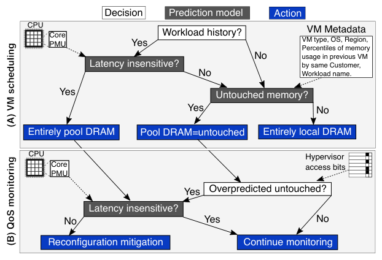
Each model is parameterized by a target error rate , a false-positive rate (FP) for the insensitivity model, an overprediction rate (OP) for the untouched-memory model , and increasing the fraction of VMs labeled insensitive (LI) or the amount of memory labeled untouched (UM) trades off against that error rate.
9 · The control plane: scheduling and QoS monitoring
At VM placement, the scheduler queries the ML serving system for a workload-history match (same customer-id, VM type, location as a prior VM); with history, it predicts insensitivity first and, if the VM is predicted sensitive (or has no history), predicts untouched memory. The Pool Manager is told the target host and pool-memory amount and triggers onlining (fast enough to not block VM start); the hypervisor starts the VM with a zNUMA node sized accordingly. Continuously afterward, a QoS monitor polls hypervisor and PMU counters, reapplies the insensitivity model to detect excessive slowdown or an untouched-memory overprediction, and if the VM's performance is at risk, asks a mitigation manager to trigger the live reconfiguration from §7.
Balancing the two models' error budgets against each other is posed as one optimization, maximizing the average memory placed on the pool subject to keeping combined scheduling mispredictions below a target tail percentage (TP):
PDM and TP are Pond's only operator-facing parameters; everything else (including both models' hyperparameters) is left at framework defaults.
10 · Implementation
Because CXL hardware was not yet broadly available, Pond is implemented and evaluated on production-style servers that emulate pool latency: a single-socket-with-pool system is emulated on a two-socket server by disabling all cores on one socket while keeping its DRAM accessible from the other, which becomes the "pool." Azure's hypervisor is extended with an API to request arbitrary zNUMA topologies, with per-vCPU PMU-state tracking that migrates with the vCPU across physical cores (sampled once per second, costing about 1ms), and with access-bit scanning (every 30 minutes, costing about 10 seconds). Models are trained nightly from a central telemetry database, exported via ONNX, and served through a custom low-latency inference system on the VM request path; the predicted zNUMA size is added as a new dimension to Azure's existing VM bin-packing scheduler (Protean).
Evaluation
zNUMA containment, prediction-model accuracy, and end-to-end simulated DRAM savings, in the paper's order (§6).
The evaluation combines small-scale production experiments, a 158-workload lab study with over 3,500 experiments and 10,000 machine-hours, and trace-driven simulation of 100 production clusters across 34 datacenters over 75 days.
| What | Value in the paper |
|---|---|
| Platform | Dual-socket Intel Skylake 8157M (384GB DDR4/socket) and dual-socket AMD EPYC 7452 (512GB DDR4/socket); CXL pool emulated by disabling one socket's cores while keeping its memory accessible |
| Emulated latency | Intel: 78ns local / 142ns remote (182% increase), 80GB/s / 30GB/s bandwidth. AMD: 115ns local / 255ns remote (222% increase) |
| Workloads | 158 workloads: Redis, VoltDB, TPC-H/MySQL (in-memory DB/KV-store); Spark, GAPBS (data/graph); SPLASH2x (HPC); SPEC CPU2017, PARSEC (CPU/shared-memory); 13 Azure proprietary production workloads |
| Baselines | All-local NUMA-node DRAM allocation; static fixed-percentage pool allocation (15% of VM memory); fixed-amount-per-VM heuristic and "Memory-bound"/"DRAM-bound" TMA heuristics for the two ML models |
| Metrics | Workload-specific slowdown (runtime, throughput, tail latency) vs. all-local baseline; false-positive rate (FP) and overprediction rate (OP); aggregate cluster DRAM requirement (%); scheduling misprediction rate |
A correctly-sized zNUMA node is barely touched
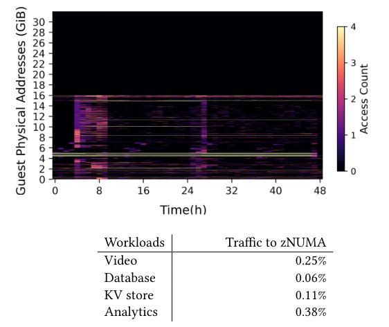
What it shows. On Azure production nodes, four internal workloads (audio/video conferencing, database, key-value store, business analytics) run with a local vNUMA node sized to cover their working set and a zNUMA node holding the rest on the pool. Access-bit scans over 48 hours show the fraction of memory accesses that reach the zNUMA node: 0.25% for the video workload, 0.06% for database, 0.11% for KV-store, and 0.38% for analytics.
What to take from it. With a correct untouched-memory prediction, the guest OS's preference for local memory keeps nearly all traffic off the pool, so the expected performance impact is negligible , this is the assumption the rest of the evaluation builds on.
Correct predictions match local-DRAM performance; mispredictions degrade gracefully with spill size
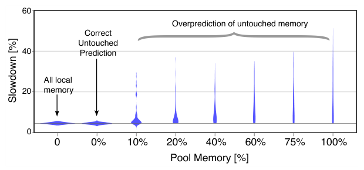
What it shows. A violin plot of slowdown across all 158 lab workloads, each run on all-local memory, a correctly-sized zNUMA (0% spilled), and zNUMA nodes undersized to force 10-100% of the footprint onto pool memory. With a correct prediction, the slowdown distribution matches all-local memory (small differences are run-to-run variation). As more of the workload spills into zNUMA, slowdown appears immediately and grows steadily, reaching up to 30-35% for some workloads at 20-75% spilled and up to 50% when the entire workload is forced onto pool memory.
What to take from it. A fixed percentage-of-memory allocation to the pool (the static baseline) would force exactly this kind of unconditional spillover and real slowdown for latency-sensitive workloads, which is why Pond instead conditions pool placement on per-VM predictions of insensitivity and untouched memory.
The latency-insensitivity model beats simple PMU heuristics
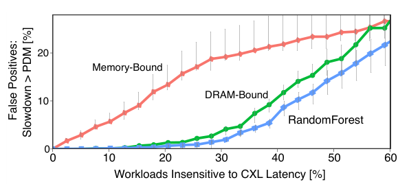
What it shows. False-positive rate (workloads marked insensitive that actually exceed a 5% PDM under 182% latency) as a function of the percentage of the 158 workloads labeled latency-insensitive, for Pond's RandomForest versus "Memory-bound" and "DRAM-bound" TMA-heuristic thresholds. "DRAM-bound" clearly outperforms "Memory-bound"; the RandomForest performs slightly better still, and some workloads show high slowdown even at low DRAM-boundedness, illustrating the general difficulty of the prediction task. The RandomForest can label 30% of workloads insensitive at only a 2% false-positive rate.
What to take from it. A learned model adds a modest but measurable improvement over a hand-picked hardware-counter heuristic, and both approaches will make some statistical errors , which is why Pond pairs prediction with the QoS monitor rather than trusting the model alone.
The untouched-memory model is about 5x more accurate than a fixed-fraction heuristic
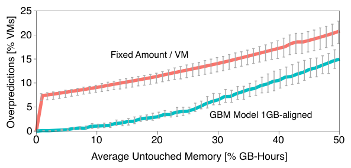
What it shows. Overprediction rate (VMs that touch more memory than predicted) versus average untouched memory achieved, for Pond's LightGBM GBM model versus a strawman that assumes a fixed fraction of memory is untouched for every VM. At 20% labeled untouched memory, the GBM overpredicts only 2.5% of VMs versus 12% for the fixed heuristic; more generally the GBM identifies 25% of memory as untouched while overpredicting only about 4% of VMs.
What to take from it. Per-VM metadata carries enough signal to beat a one-size-fits-all heuristic by roughly 5x on overprediction rate, enabling Pond to place a meaningful fraction of cluster memory on the pool without much risk of undersizing a VM's local footprint.
The model holds up in production, not just simulation
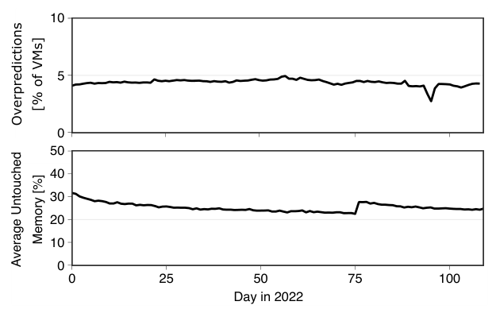
What it shows. A production deployment of the untouched-memory model over the first 110 days of 2022, targeting a 4% overprediction rate, tracking both the overprediction rate and the average untouched memory percentage achieved day by day.
What to take from it. The production model's average untouched-memory percentage is similar to the simulated model in Result 4; day-to-day variability is attributed to distributional shift in the VM population, indicating the model needs ongoing retraining (consistent with Pond's daily retraining schedule) rather than being a one-time fit.
Combining both models outperforms using either alone
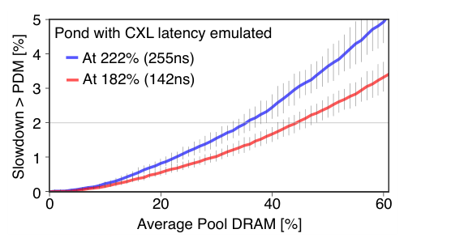
What it shows. Scheduling-misprediction rate (fraction of VMs exceeding the PDM) as a function of the average percentage of cluster DRAM allocated to the pool, for Pond's combined optimization (Eq. 1) under both 182% and 222% emulated latency increases.
What to take from it. Jointly tuning the two models' error budgets lets Pond place more memory on the pool for the same misprediction target than either model would alone; at a 2% misprediction target, Pond schedules 44% of DRAM on pools under 182% latency and 35% under 222% latency.
End-to-end, a 16-socket Pond pool cuts cluster DRAM needs by up to 9%
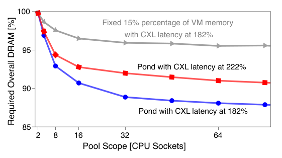
What it shows. Trace-driven simulation of required overall cluster DRAM as a function of pool size (2-64 sockets), for Pond under 182% and 222% emulated latency increases and for the static 15%-per-VM strawman, all under a PDM of 5% and a target tail percentage (TP) of 98%.
What to take from it. At a 16-socket pool, Pond reduces overall DRAM requirements by 9% (182% latency) and 7% (222% latency), versus 3% for the static baseline; the paper reports this pattern holds qualitatively across PDM values from 1-10% and TP from 90-99.9%. Pool memory offlining also stays practical operationally: below 1GB/s for 99.99% of VM starts and below 10GB/s for 99.999%.
FAQ
Q·What problem is Pond actually solving?▾
Cloud servers end up with memory that is technically idle (because all cores are rented but memory is left over) but cannot be rented to anyone else, since a new tenant needs cores too. Pond lets that leftover memory be pooled across several servers' sockets via CXL and reassigned dynamically, while still giving performance-sensitive VMs same-NUMA-node-like performance.
Q·How is this different from memory tiering systems like TPP or Nimble?▾
Tiering systems (the paper cites Nimble and Google's software-defined far memory) move cold pages from DRAM to a slower tier and back, usually via page faults and access monitoring inside one host's address space. Pond instead statically allocates a VM's address space across local DRAM and a pool at VM start (no faults, so virtualization accelerators keep working), and decides the split using predictions about the whole VM rather than per-page hot/cold tracking. The paper describes these as orthogonal, platform-level versus page-level approaches.
Q·Why does CXL matter here instead of, say, RDMA-based disaggregation?▾
CXL.mem lets a CPU's cache misses and write-backs become low-latency memory-bus transactions (nanosecond scale), handled entirely by hardware and the MMU/page tables. RDMA-based or software disaggregation systems require explicit remote-memory accesses, page faults, or application/runtime changes, all of which are either too slow (microseconds) or too invasive (guest changes) for Pond's opaque-VM, accelerator-compatible setting.
Q·What is a zNUMA node and why not just give the VM a uniform pooled address space?▾
A zNUMA node is a NUMA node with memory but no CPUs, visible to the guest OS's own NUMA-aware allocator. Because guest allocators already prefer the local (same-socket) node before a farther one, sizing the zNUMA node to a VM's predicted untouched memory means the guest naturally avoids it unless it truly needs more memory than predicted. A uniform address space (as in some prior disaggregation designs) can't exploit this bias, since the guest has no concept of "closer" memory to prefer.
Q·What happens if Pond's predictions are wrong?▾
If untouched memory is overpredicted, the VM's real working set spills into the zNUMA node and the guest pays pool latency on part of its memory , the QoS monitor is designed to catch this via hardware counters. If a VM is wrongly marked latency-insensitive and placed entirely on the pool, the same monitor detects the resulting slowdown. Either case triggers a live reconfiguration that copies the VM back onto local DRAM; the VM's memory stays mapped throughout, so performance degrades rather than failing outright.
Q·Why pool only 8-16 sockets instead of pooling at rack scale?▾
Two findings push toward small pools. Production trace analysis shows DRAM savings from pooling diminish quickly past about 16-32 sockets. And latency grows with pool size: an 8/16-socket pool using Pond's multi-headed EMC adds only 70-90ns over local DRAM, while 32-64-socket (rack-scale) pools need switches and retimers and add well over 180ns. Small pools capture most of the savings at a much smaller latency cost.
Q·What exactly is the EMC, and why not use an off-the-shelf CXL switch?▾
The external memory controller (EMC) is a new ASIC that presents DDR5-backed memory through several CXL ports as a single logical multi-headed device, one port per host, as standardized in CXL 3.0. A pure switch-based design routes every access through switch arbitration and an extra hop; Pond's direct multi-headed EMC design cuts about a third off that access latency for the same pool size.
Q·How can an ML model make useful predictions about a VM the provider can't inspect?▾
Pond uses only telemetry that doesn't require looking inside the VM: core-PMU hardware counters (e.g., TMA's memory-bound/DRAM-bound pipeline-slot metrics) for the latency-insensitivity model, and VM metadata (customer history, VM type, OS, region) plus hypervisor-side signals (guest-committed-memory counters, page-table access-bit scans) for the untouched-memory model. None of it requires cooperation from or visibility into the guest OS or application.
Q·Why do the two prediction models need to be balanced against each other rather than optimized separately?▾
Both models contribute to the same overall risk budget , VMs that end up exceeding the allowed performance-degradation margin (PDM). Pond solves a single optimization (its Eq. 1) that trades the insensitivity model's false-positive rate against the untouched-memory model's overprediction rate, to maximize pool memory usage subject to an overall misprediction-rate target (TP). Tuning either model in isolation would not find this joint optimum.
Q·Does Pond require changes inside the guest OS or applications?▾
No. The guest sees a normal (if asymmetric) NUMA topology via standard ACPI SLIT/SRAT tables and uses its existing NUMA-aware memory allocator unmodified. All the prediction, placement, and monitoring logic lives in the hypervisor and host-side control plane.
Q·Is Pond actually deployed, or is this a research prototype?▾
At publication, CXL hardware was roughly a year from broad availability, so Pond is implemented on an emulation layer deployed on production Azure servers (disabling cores on one socket to emulate a CXL pool) and evaluated with real production telemetry and trace-driven simulation. The zNUMA mechanism, telemetry pipeline, and prediction models are validated on real production nodes individually; the full pooled-hardware end-to-end system is evaluated via simulation.
Q·What stops a customer from gaming the untouched-memory prediction to get extra performance?▾
The paper notes this is the same oversubscription-robustness problem that exists for other shared resources like CPU harvesting, and argues that at the scale of multiplexing millions of customers, any individual customer's gaming has limited impact; it also suggests discounting underutilized resources as an alternative lever, without presenting this as a solved problem.